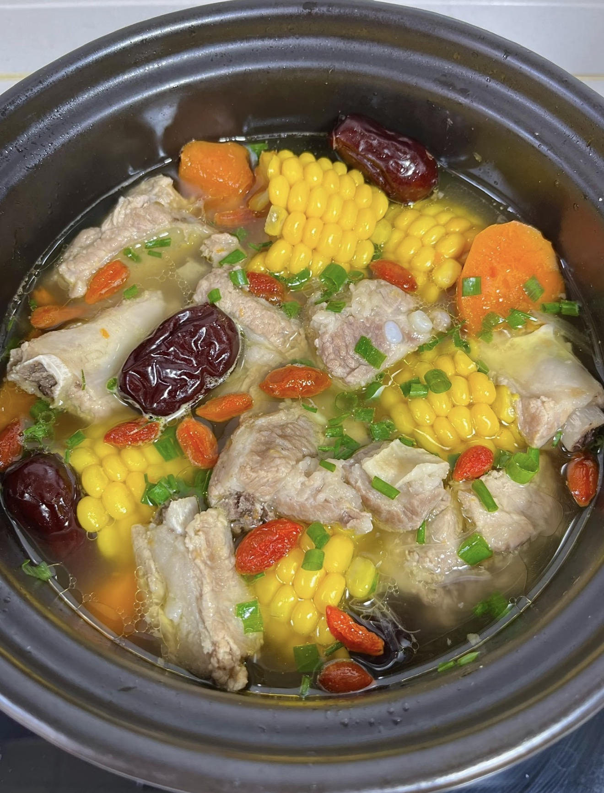
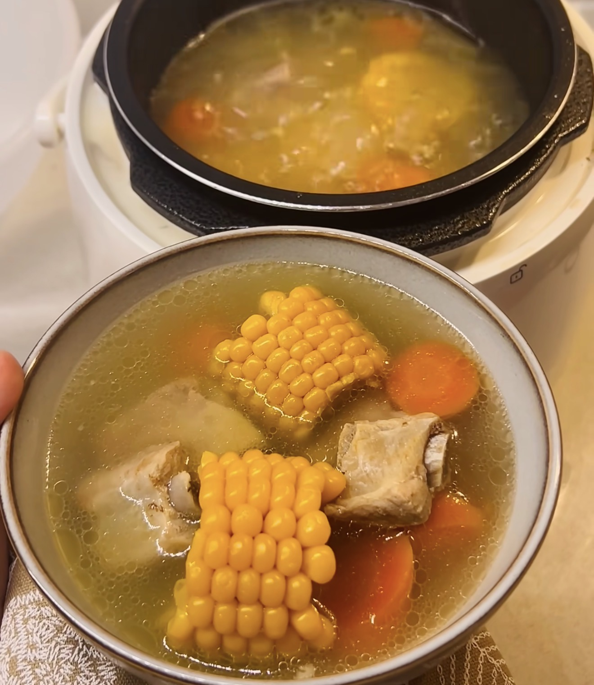

Corn Pork Rib Soup
玉米排骨汤 — A light and nourishing soup with sweet corn and tender pork ribs.
Ingredients
- Pork ribs
- Corn (cut into chunks)
- Chinese yam (optional)
- Carrot (optional)
- Red dates (optional)
- Ginger slices
- Scallions
- Cooking wine
- Salt
- White pepper (optional)
Directions
- Wash pork ribs and blanch in cold water with ginger and cooking wine.
- Bring to boil, remove ribs and rinse clean.
- Cut corn, yam, and carrot into chunks.
- Add ribs, ginger, and scallions into a pot.
- Pour in enough boiling water to cover ingredients.
- Simmer for 30 minutes.
- Add corn, carrot, and red dates.
- Continue simmering for another 20 minutes.
- Add yam and cook for 15 minutes.
- Season with salt and white pepper.
- Garnish with scallions and serve.